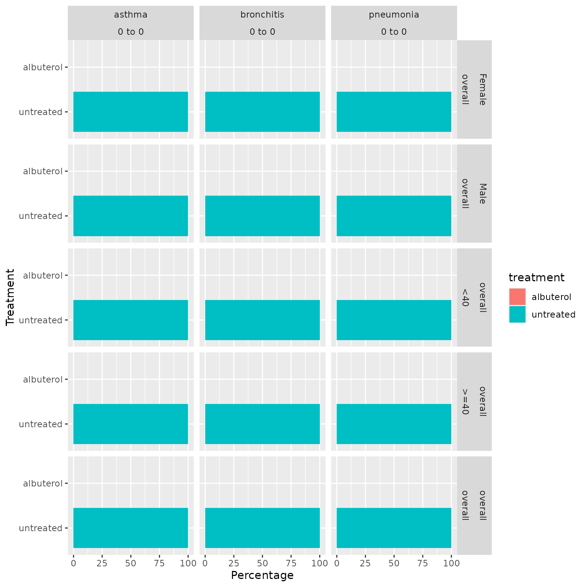

Summarise treatments received by a cohort
2024-07-27
summarise_treatments.RmdIntroduction
After creating a study cohort, for example of some specific condition of interest, we may be interested in describing the treatments received by the individuals within it. Here we show how such a summary can be obtained.
Create mock table
We will use mock data contained in the package throughout the
vignette. Let’s modify cohort tables cohort1 and
cohort2 in our mock dataset, so the first table includes 3
cohorts of health conditions (our study cohorts), while the second
contains three are of treatments they could receive.
library(DrugUtilisation)
library(CDMConnector)
library(dplyr)
library(PatientProfiles)
cdm <- mockDrugUtilisation(numberIndividual = 200)
new_cohort_set <- settings(cdm$cohort1) %>%
dplyr::arrange(cohort_definition_id) %>%
dplyr::mutate(cohort_name = c("asthma","bronchitis","pneumonia"))
cdm$cohort1 <- cdm$cohort1 |>
newCohortTable(cohortSetRef = new_cohort_set)
new_cohort_set <- settings(cdm$cohort2) %>%
dplyr::arrange(cohort_definition_id) %>%
dplyr::mutate(cohort_name = c("albuterol","fluticasone","montelukast"))
cdm$cohort2 <- cdm$cohort2 |>
newCohortTable(cohortSetRef = new_cohort_set)Notice that cohort1 is a cohort table with three cohorts
representing three different conditions:
settings(cdm$cohort1)
#> # A tibble: 3 × 2
#> cohort_definition_id cohort_name
#> <int> <chr>
#> 1 1 asthma
#> 2 2 bronchitis
#> 3 3 pneumoniaAnd cohort2 is a cohort table with three different
treatment cohorts:
settings(cdm$cohort2)
#> # A tibble: 3 × 2
#> cohort_definition_id cohort_name
#> <int> <chr>
#> 1 1 albuterol
#> 2 2 fluticasone
#> 3 3 montelukastSummarise treatment
The summariseTreatment() function produces a summary of
the treatment received by our study cohorts. There are three mandatory
arguments:
-
cohort: cohort from the cdm object. -
treatmentCohortName: name of the treatment cohort’s table. -
window: list of the windows where to summarise the treatments.
See an example of its usage below, where we use
summariseTreatment() to summarise treatments defined in
cohort2 in the cohorts defined in cohort1.
summariseTreatment(cohort = cdm$cohort1,
treatmentCohortName = c("cohort2"),
window = list(c(0,0), c(1,30)))
#> # A tibble: 48 × 13
#> result_id cdm_name group_name group_level strata_name strata_level
#> <int> <chr> <chr> <chr> <chr> <chr>
#> 1 1 DUS MOCK cohort_name asthma overall overall
#> 2 1 DUS MOCK cohort_name asthma overall overall
#> 3 1 DUS MOCK cohort_name asthma overall overall
#> 4 1 DUS MOCK cohort_name asthma overall overall
#> 5 1 DUS MOCK cohort_name asthma overall overall
#> 6 1 DUS MOCK cohort_name asthma overall overall
#> 7 1 DUS MOCK cohort_name asthma overall overall
#> 8 1 DUS MOCK cohort_name asthma overall overall
#> 9 1 DUS MOCK cohort_name asthma overall overall
#> 10 1 DUS MOCK cohort_name asthma overall overall
#> # ℹ 38 more rows
#> # ℹ 7 more variables: variable_name <chr>, variable_level <chr>,
#> # estimate_name <chr>, estimate_type <chr>, estimate_value <chr>,
#> # additional_name <chr>, additional_level <chr>strata parameter
We can also stratify our cohort and calculate the estimates within
each strata group by using the strata parameter.
cdm[["cohort1"]] <- cdm[["cohort1"]] %>%
addSex() %>%
addAge(ageGroup = list("<40" = c(0, 39), ">=40" = c(40, 150)))
results <- summariseTreatment(
cohort = cdm$cohort1,
treatmentCohortName = c("cohort2"),
window = list(c(0,0)),
treatmentCohortId = 1,
strata = list("sex", "age_group")
)Notice that we have also used the treatmentCohortId
parameter to specify that we only want to explore albuterol
across the cohorts defined in cohort1.
Visualise results
The package includes table and plot
functions to help visualise the results from
summariseTreatment().
Tables
The tableTreatment() function generates a table in gt,
flextable, or tibble format from the summarised_result produced by
summariseTreatment(). This function has customisation
options to format the table according to user preferences.
tableTreatment(
result = results,
header = c("strata"),
splitStrata = FALSE,
cdmName = FALSE,
groupColumn = c("cohort_name"),
type = "gt",
formatEstimateName = c("N (%)" = "<count> (<percentage> %)"),
.options = list()
)
#> ! Results have not been suppressed.| Treatment | Estimate name | Window name | Age group | Overall | Sex | ||
|---|---|---|---|---|---|---|---|
| <40 | >=40 | Overall | Female | Male | |||
| Asthma | |||||||
| Albuterol | N (%) | 0 to 0 | 0 (0.00 %) | 0 (0.00 %) | 0 (0.00 %) | 0 (0.00 %) | 0 (0.00 %) |
| Untreated | N (%) | 0 to 0 | 51 (100.00 %) | 15 (100.00 %) | 66 (100.00 %) | 29 (100.00 %) | 37 (100.00 %) |
| Bronchitis | |||||||
| Albuterol | N (%) | 0 to 0 | 0 (0.00 %) | 0 (0.00 %) | 0 (0.00 %) | 0 (0.00 %) | 0 (0.00 %) |
| Untreated | N (%) | 0 to 0 | 44 (100.00 %) | 7 (100.00 %) | 51 (100.00 %) | 27 (100.00 %) | 24 (100.00 %) |
| Pneumonia | |||||||
| Albuterol | N (%) | 0 to 0 | 0 (0.00 %) | 0 (0.00 %) | 0 (0.00 %) | 0 (0.00 %) | 0 (0.00 %) |
| Untreated | N (%) | 0 to 0 | 60 (100.00 %) | 23 (100.00 %) | 83 (100.00 %) | 39 (100.00 %) | 44 (100.00 %) |
Plots
The plotTreatment() function creates a bar plot showing
the percentage of treated and untreated in each cohort, stratum, and
time-window. This function offers customization options for colors,
faceting, and handling of strata.
plotTreatment(
result = results,
facetX = c("cohort_name", "window_name"),
facetY = c("strata"),
splitStrata = TRUE,
colour = "treatment"
)
#> ! There are duplicated points, not included either in facetX, facetY or colour:
#> • variable_name: albuterol, untreated.